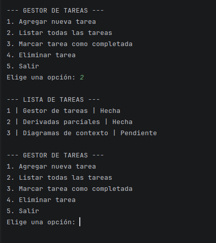
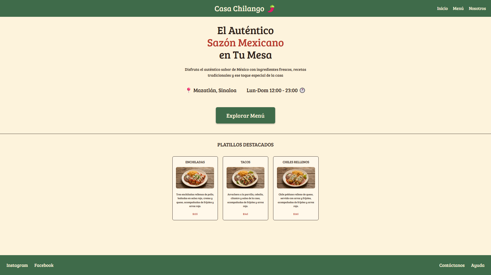
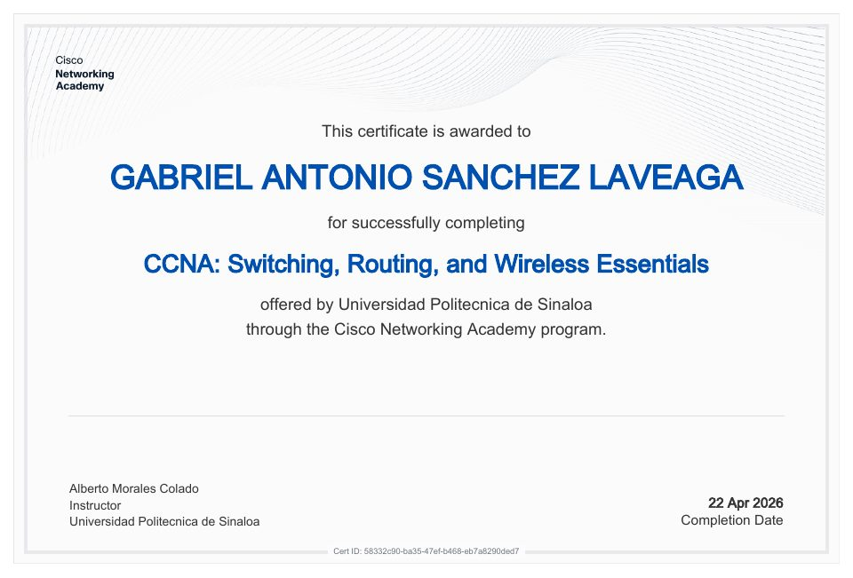
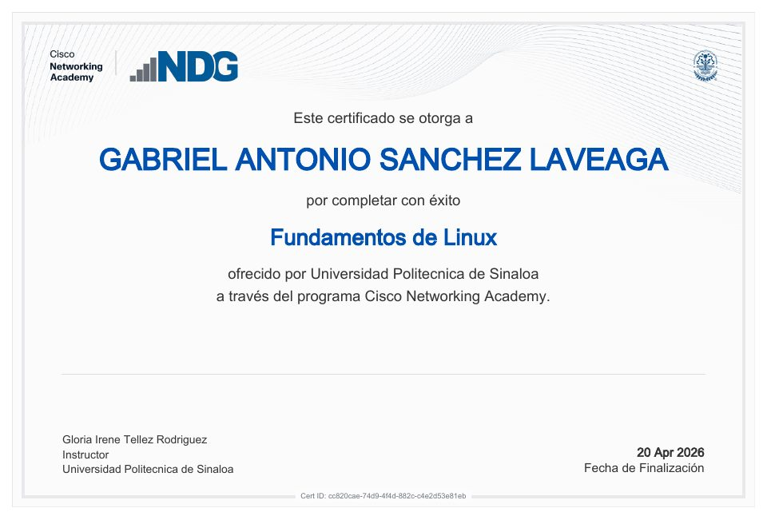
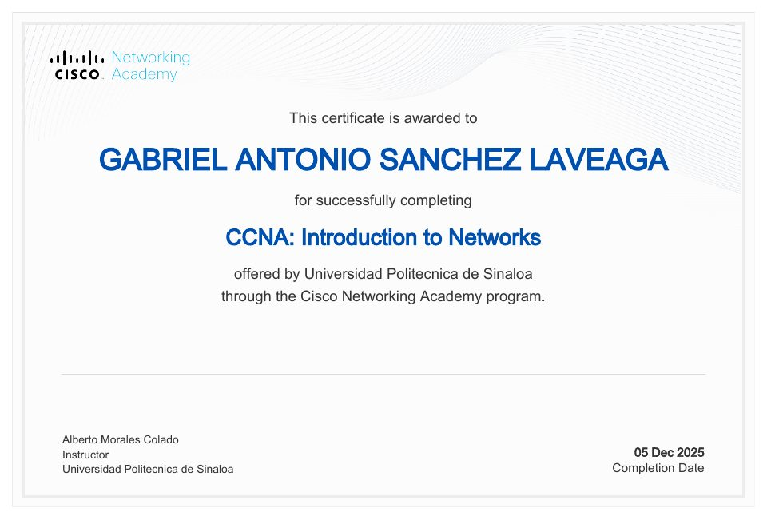

Gestor de Tareas
Ayuda a organizarte con tus tareas y consultar pendientes It helps you organize your tasks and check pending items. Cela vous aide à organiser vos tâches et à vérifier les éléments en attente.
- Java
- MySQL
- JDBC
Hola, soyHi, I'mBonjour, je suis
Desarrollador Back-End enfocado en construir aplicaciones completas. Back-End developer focused on building complete applications. Développeur Back-End spécialisé dans la création d’applications complètes.
Soy estudiante de Ingeniería en tecnologías de la información e innovación digital en la Universidad Politécnica de Sinaloa. Soy una persona curiosa y me interesa aprender tecnologías nuevas. Me enfoco en el desarrollo de aplicaciones completas: diseñar la base de datos con MySQL, programar la lógica en Java, conectar ambas partes mediante JDBC y llevar el control de versiones con Git. Busco seguir creciendo como desarrollador Back-End y aplicar lo que aprendo en proyectos reales. I am an Information Technology and Digital Innovation Engineering student at the Polytechnic University of Sinaloa. I am a curious person and I am interested in learning new technologies. I focus on building complete applications: designing the database with MySQL, writing the logic in Java, connecting both parts through JDBC, and managing versions with Git. I want to keep growing as a Back-End developer and apply what I learn in real projects. Je suis étudiant en ingénierie des technologies de l’information et de l’innovation numérique à l’Université polytechnique de Sinaloa. Je suis une personne curieuse et je m’intéresse aux nouvelles technologies. Je me concentre sur le développement d’applications complètes : concevoir la base de données avec MySQL, écrire la logique en Java, relier les deux parties grâce à JDBC et gérer les versions avec Git. Je souhaite continuer à progresser en tant que développeur Back-End et appliquer ce que j’apprends dans des projets réels.

Ayuda a organizarte con tus tareas y consultar pendientes It helps you organize your tasks and check pending items. Cela vous aide à organiser vos tâches et à vérifier les éléments en attente.

Sitio web de un Restaurante Mexicano. Website of a Mexican Restaurant. Site web d'un restaurant mexicain.

Cisco Networking Academy · Universidad Politécnica de Sinaloa
22 de abril de 2026April 22, 202622 avril 2026
Ver certificado (PDF)View certificate (PDF)Voir le certificat (PDF)

Cisco Networking Academy · Universidad Politécnica de Sinaloa
20 de abril de 2026April 20, 202620 avril 2026
Ver certificado (PDF)View certificate (PDF)Voir le certificat (PDF)

Cisco Networking Academy · Universidad Politécnica de Sinaloa
5 de diciembre de 2025December 5, 20255 décembre 2025
Ver certificado (PDF)View certificate (PDF)Voir le certificat (PDF)